This week: logistic regression.
Binary Classification & notation
ex. cat classifier from image
image pixels: 64x64x3
⇒ unroll(flatten) to a feature vector x dim=64x64x3=12288:=n (input dimension)
notation
- superscript
(i)for ith example, e.g.x^(i) - superscript
[l]for lth layer, e.g.w^[l] m: number of datan_x: input dimension,n_y: output dimension.n_h^[l]: number of hidden units for layer l.L: number of layersX: dim=(n_x,m), each column is a training example x^(i).Y: dim=(1,m), one singlerowmatrix.
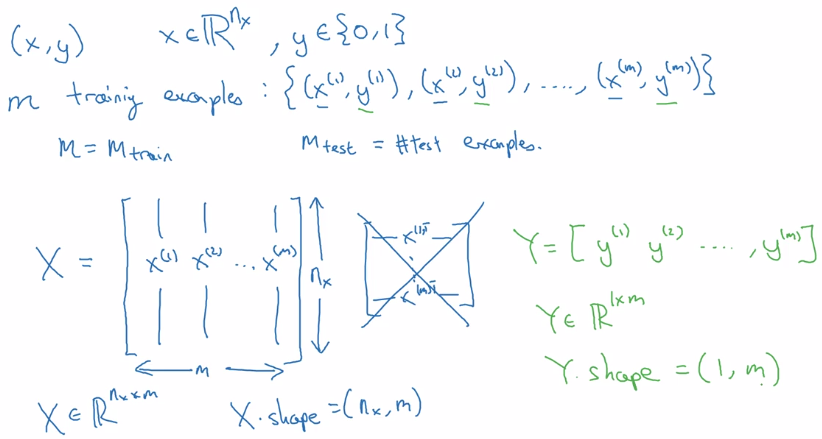
Logistic Regression as a Nueral Network
Logistic Regression
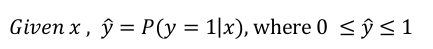
dim(x) = n_x
parameters: w (dim=n_x) , b (dim=1)
(alternative notation: adding b to w → add x_0 = 1 to feature x. → will NOT use this notation here
keeping w and b separate make implementation easier )
linear regression: y_hat = w^T*x + b
logistic regssion: y_hat = sigmoid(w^T*x + b)
sigmoid function: S-shaped function
sigmoid(z) = 1 / ( 1 + e^-z)
z large → sigmoid(z) ~= 1
z small → sigmoid(z) ~= 0
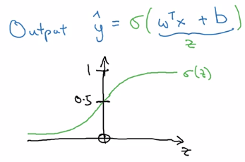
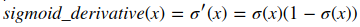
Logistic Regression Cost Function
To train model for best parameters (w, b), need to define loss function.
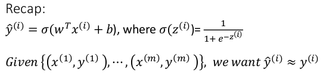
y_hat: between (0,1)
training set: {(x^(i), y^(i)))), i = 1..m}
want: y_hat(i) ~= y(i)
Loss function L(y_hat, y): on a single training example (x, y)
- square error:
L(y_hat, y) = (y_hat - y)^2/2- ⇒ not convex, GD not work well, uneasy to optimize
- loss function used in logistic regression:
L(y_hat, y) = -[ylog(y_hat) + (1-y)log(1-y_hat)]
- convex w.r.t. w and b
- when y = 1, loss = -log(y_hat) → want y_hat large → y_hat ~=1
- when y = 0, loss = -log(1-y_hat) → want y_hat small → y_hat ~=0
Cost function J(w,b): average on all training sets, only depends on parameters w, b
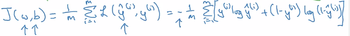
Gradient Descent
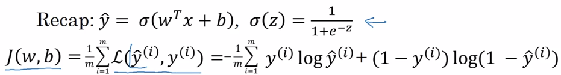
⇒ minimize J(w,b) wrt. w and b
J(w,b)is convex ⇒ gradient descent- Initialization: for logistic regression, any init works because of convexity of J, usually init as 0
Gradient descent:
alpha= learning rate- derivative
dJ(w)/dw
~= slope of function J at point w
~= direction where J grows fastest at point w
denote this as 'dw' in code
- algo: 'take steepest descent'
- from an init value of w_0
- repeatedly update w until converge
w := w - alpha*dw
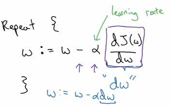
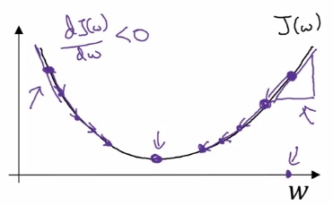
In the case of logistic regression, >1 params (w and b) to update:
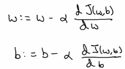
Intuitions about derivatives: f'(a) = slope of function f at a .
Computation Graph
example: function J(a,b,c) = 3(a+b*c)
Forward propagation: compute J(a,b,c) value:
- internal u := b*c
- internal v := a+u
- J = 3 * v
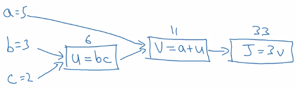
Backward propagation: compute derivatives dJ/da, dJ/db, dJ/dc:
- J = 3*v → compute dJ/dv
- v = a + u → compute dv/da, dv/du
- u = bc → compute du/db, du/dc
⇒ chain rule: dJ/da is multiplying the derivatives along the path from J back to a
- dJ/da = dJ/dv * dv/da
- dJ/db = dJ/dv * dv/du * du/db
-
dJ/dc = dJ/dv * dv/du * du/dc
-
In code: denote '
dvar' as d(FinalOutput)/d(var) for simplicity. i.e. da = dJ/da, dv = dJ/dv, etc.
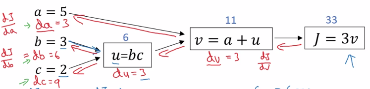
Logistic Regression Gradient Descent (&computation graph)
logistic regression loss(on a single training example x,y) L. as computation graph:
- z = wx + b
- a := sigmoid(z) (=y_hat, 'logit'?)
- loss function L(a,y) = - [y(loga) + (1-y)log(1-a)]
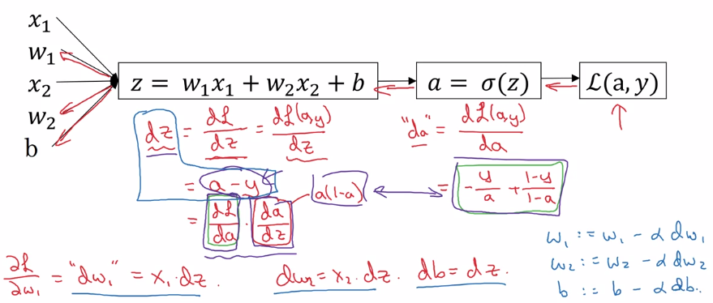
Gradient Descent on m Examples
cost function, i.e. on all training sets.
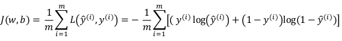
J(w,b) = avg{L(x,y), for all m examples}
→ by linearity of derivative: dJ/dw = avg(dL/dw), just average dw^(i) over all indices i.
In implementation: use vectorization as much as possible, get rid of for loops.
Python and Vectorization
Vectorization
avoid explicit for-loops whenever possible
e.g. z = w^T * x + b
in numpy:
z = np.dot(w, x) + b
~300 times faster than explicit for loop
more examples:
u = A*v matrix multiplication
→ u = np.dot(A, v)
note: A * v would element-wise multiply
u = exp(v) element-wise operation: exponential/log/abs/...
→ u = np.exp(v) / np.log(v) / np.abs(v) / v**2 / 1/v
Vectorizing Logistic Regression
implementation before: two for-loops( 1 for each training set, 1 for each feature vector).
- training input
X = [x(1), ... , x(m)], X.dim = (n_x, m) - weight
w^T = [w_1, ... , w_nx], w.dim = (n_x, 1)
Fwd propagation
z(i) = w^T * x(i) + b, i = 1..m,
→ Z := [z(1)...z(m)] = w^T * X + [b...b], Z.dim = (1, m), stack horizentally
→ Z = np.dot(w.T, X) + b (scalar b auto broadcasted to a row vector)
a(i) = sigmoid( z(i) ) = y_hat(i)
→ A := [a(1)...a(m)] = sigmoid(Z), sigmoid is vectorized
Bkwd propagation: gradient computation
dz(i) = a(i) - y(i)
→ stack horizentally:
Y = [y(1)...y(m)]
dZ := [dz(1)...dz(m)] = A - Y
graidents:
dw = sum( x(i) * dz(i) ) / m, dw.dim = (nx, 1)
db = sum( dz(i) ) / m
→
db = 1/m * np.sum(dZ)
dw = 1/m * X*dz^T
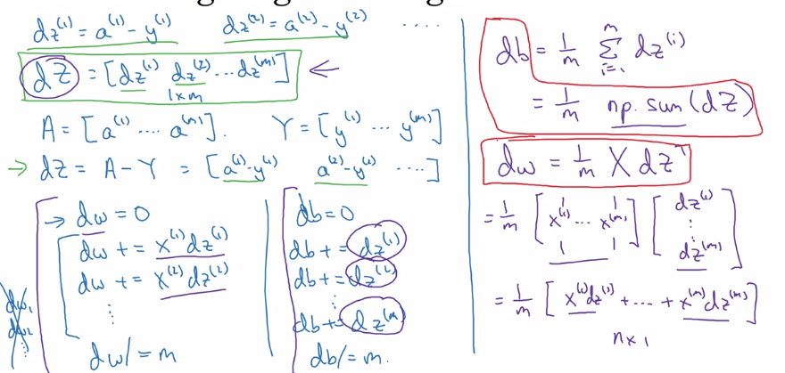
efficient back-prop implementation:
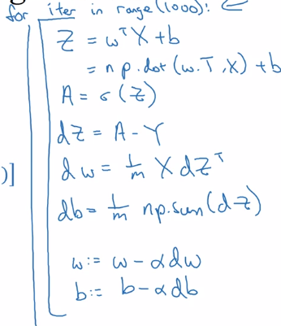
Broadcasting in Python
example: calculate percentage of calories from carb/protein/fat for each food — without fooloop
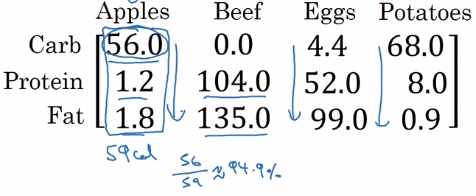
two lines of numpy code:
A = np.array([[...]..]) # A.dim = (3,4)
cal = A.sum(axis=0) # total calories
percentage = 100 * A / cal.reshape(1,4) # percentage.dim = (1,4)
axis=0→ sum vertically,axis=1→ sum horizentally
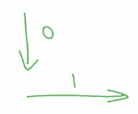
reshape(a,b)→ redundant here, just to make sure shape correct, reshape call is cheap.A / cal→ (34 matrix) / (14 matrix) → broadcasting
more broadcasting examples:
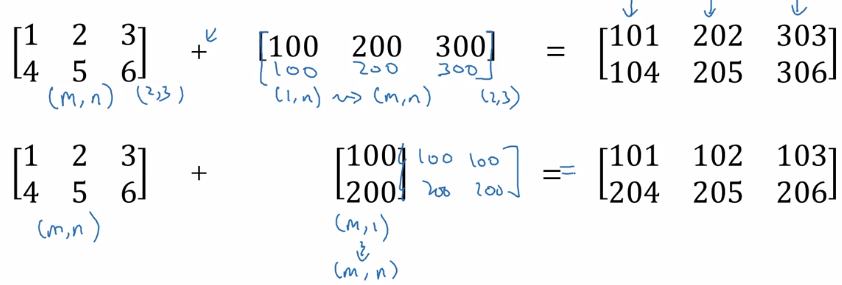
General principle: computing (m,n) matrix with (1,n) matrix
⇒ the (1,n) matrix is auto expanded to a (m,n) matrix by copying the row m times, to match the shape, calculate element-wise
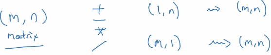
A note on python numpy vectors
flexibility of broadcasting: both advantage and weakness. example: adding column vec and a row vec → get a matrix instead of throwing exceptions. >>> a array([1, 2, 3]) >>> b array([[1], [2]]) >>> a + b array([[2, 3, 4], [3, 4, 5]])
Tips and trick to eliminate bugs
avoid rank-1 array:
a.shape = (x,)
this is neither row nor column vector, have non-intuitive effects.
>>> a = np.array([1,2,3])
>>> a.shape
(3,) # NOT (3,1)
>>> a.T
array([1, 2, 3])
>>> np.dot(a, a.T) # Mathematically would expact a matrix, if a is column vec
14
>>> a.T.shape
(3,)
⇒ do not use rank-1 arraies, use column/row vectors >>> a2 = a.reshape((-1, 1)) # A column vector -- (5,1) matrix. >>> a2 array([[1], [2], [3]]) >>> a2.T array([[1, 2, 3]]) # Note: two brackets!
add assertions
assert(a.shape == (3,1))
Explanation of logistic regression cost function (optional)
Justisfy why we use this form of cost function: y_hat ~= chance of y==1 given x want to express P(y|x) using y_hat and y P(y|x) as func(y, y_hat) at different values of y:
- if y = 1: P(y|x) = P(y=1|x) = y_hat
- if y = 0: P(y|x) = P(y=0|x) = 1 - y_hat
⇒ wrap the two cases in one single formula: using exponent of y and (1-y)
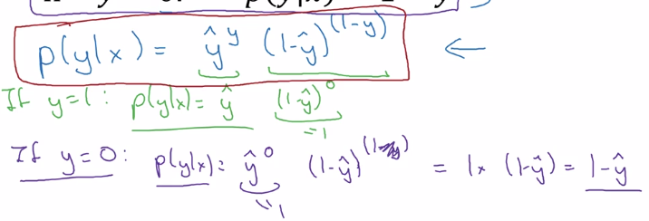
⇒ take log of P(y|x) ⇒ loss function (for a single training example)
⇒ aggregate over all training examples i = 1..m:
(assume: data are iid)
P(labels in training set) = multiply( P(y(i)|x(i) )
take log → log(P(labels in training set)) = sum( log P(y(i)|x(i) ) = - J
maximizing likelihood = minimizing cost function
Assignments
python / numpy basics
- np.reshape() / np.shape
- calculate norm:
np.linalg.norm()
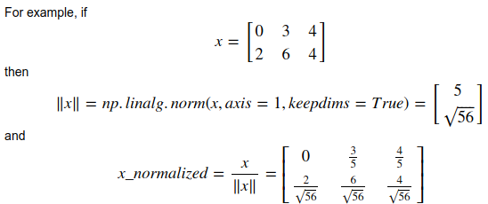
keepdims=True:
axes that are reduced will be kept (with size=1)
>>> a
array([[ 0.01014617, 0.08222027, -0.59608242],
[-0.18495204, -1.50409531, -1.03853663],
[ 0.03995499, -0.67679544, 0.11513247]])
>>> a.sum(keepdims=1)
array([[-3.75300795]])
>>> a.sum()
-3.7530079538833663
- broadcasting
- softmax:
softmax for row vec:
x.shape = (1,n), x = [x1,...xn]
y = softmax(x), y.shape = (1,n), yi = exp(xi) / sum( exp(xi) )
softmax for matrix
X.shape = (m,n)
Y = softmax(X) = [softmax(row-i of X)], Y.shape = (m, 1)
Logistic Regression with a Neural Network mindset
- input preprocessing
input dataset shape = (m, num_px, num_px, 3)
→ reshape to one column per example, shape = (num_pxnum_px3, ~~m~~)
→ center & standardize data: x' = (xi - x_mean) / std(x),
but for images: just divide by 255.0 (max pixel value), convenient and works almost as well.
- params initialization
For logistic regression (cost function convex), just init to zeros is OK. w = np.zeros((dim,1)) b = 0.0
- Fwd prop: compute cost function
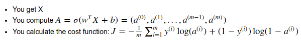
input X (shape = nx*m, one column per example)→ logits Z → activations A=sigmoid(Z)→ cost J
- Bkwd prop
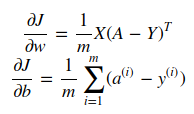
- Optimization
gradient descent: w := w - alpha*dw
- Predict: using learned params
Yhat = A = sigmoid(wT * X + b)
Part 2 of series «Andrew Ng Deep Learning MOOC»：
- [Neural Networks and Deep Learning] week1. Introduction to deep learning
- [Neural Networks and Deep Learning] week2. Neural Networks Basics
- [Neural Networks and Deep Learning] week3. Shallow Neural Network
- [Neural Networks and Deep Learning] week4. Deep Neural Network
- [Improving Deep Neural Networks] week1. Practical aspects of Deep Learning
- [Improving Deep Neural Networks] week2. Optimization algorithms
- [Improving Deep Neural Networks] week3. Hyperparameter tuning, Batch Normalization and Programming Frameworks
- [Structuring Machine Learning Projects] week1. ML Strategy (1)
- [Structuring Machine Learning Projects] week2. ML Strategy (2)
- [Convolutional Neural Networks] week1. Foundations of Convolutional Neural Networks
- [Convolutional Neural Networks] week2. Deep convolutional models: case studies
- [Convolutional Neural Networks] week3. Object detection
- [Convolutional Neural Networks] week4. Special applications: Face recognition & Neural style transfer
- [Sequential Models] week1. Recurrent Neural Networks
- [Sequential Models] week2. Natural Language Processing & Word Embeddings
- [Sequential Models] week3. Sequence models & Attention mechanism
Disqus 留言